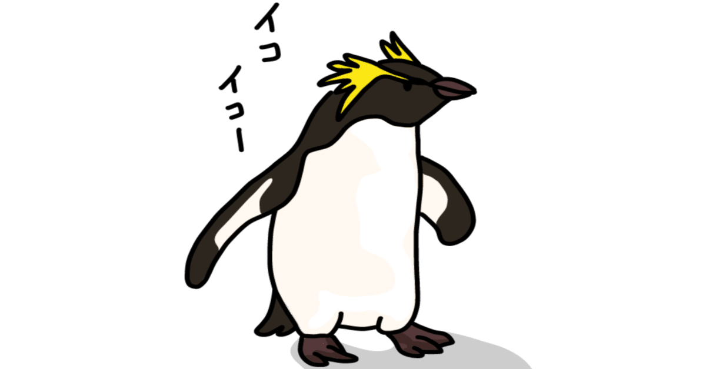

多分この記事が公開されるのは9月だろうが、記事を書いているのは29歳最後の夜だったりする。
特別意識していたわけではないけれど……いざ当日になってみるとひしひしと感じる。そう。20代が終わってしまう寂しさを。
ここでひとつ、これを読んでくださっている30overの皆様に問いたい。
20代最後の日、何をしていましたか？
家族で過ごしたり、仲の良い友人と会っていたり。はたまた、恋人とステキな夜を迎えたり……想像は尽きない。
一度きりの人生、僕もそんな風に過ごしてみたかったけど、結局都会の片隅にある自宅マンションでぼーっとしていたら、｢知らぬ間に30歳でした(にっこり)｣というオチが、もうすぐそこまできている。
それは、｢ハナから年齢なんて意識しておりませんので(キリッ)｣というスタンスでもなく、｢意識したら負け……意識したら負け……｣といったような未練たらしさ満載の心持ちなのだから、余計に救いようがないのだ。
｢やだー！ お願いだから行かないでー！｣
心のうちで勇気を出して、ようやく放った一言がこれだ。
いくら情けない声を出して呼び止めても、今までの経験上、そんなやつのために立ち止まった人を僕は誰ひとり知らない。
20歳になった日から29歳最後の日までの10年。
思い返せば色々と経験した10年間だった。
学生から社会人になって、実家を出て一人暮らしを始めたり。
幼い頃から可愛がってくれた人との別れや、心をさらけ出せる人との出会いもあった。
初めて運命を感じるような一目惚れもしたし、仕事で大きな失敗もしたし、人間不信になるような瞬間もあった。
お金を稼いで生活を成立させていく大変さを実感し、今まで育ててくれた両親に人知れず感謝したり（それは直接伝えなさい）。
大人になったことで得た自由と、未成年を卒業したことで失った後ろ盾。
最近考えることがある。
日々少しずつ消えていく純粋さをなるべく持ち続けていきたいな、って。
その正体をうまく捉えることは難しかったりするけど、思いがけず出会う映画やドラマ、小説がそのヒントをくれたりした。
今でも心身が疲れ切った時は、その作品に触れてエネルギーを蓄えている。僕が涙を流す作品にはきっと、そんなセラピーのような効果もあるのだろう。
心ある助言よりも、実際に行動することでしか納得感を持って前に進めない性格が、周囲の人を心配させたり、結果的に自分を傷つける結果になったことも多々あった。
もしかしたら、今もその真っ只中なのかもしれない。
いつだって、歩んできた足跡は過去になって初めて振り返ることができるものだから。
それでも、この10年があったから、僕はなんとか明日を迎えられる。
端から見たら無駄でしかない過程も、僕にとっては意味のある時間だった、といったことも無数にあったはずだ。
そんなことを、大多数にとっては取るに足らないことを、僕は30代以降も積み重ねていくのだろう。
あれ。なんだかテンションがおかしいな。笑
「『20代最後の日』という一生に一回しか使えないネタで、盛大に笑えるエッセイにしたるで！」と、いつにも増して張り切って書き始めたというのに。ここまで読み返してみたら、想像以上に感傷的なテイストに仕上がっているではないか！
真面目に分析すると、本当は笑って20代を終えたかったけど、うまくそれができないのは、この10年楽しいことばかりじゃなかったからだ。（あんた本当に暗いな！）
その片鱗は、ここnoteにも書いてある通り。
それはエッセイであったり、小説であったり、詩であったりするけれど、それらには間違いなく僕が生きてきた道が記されている。
読み返すのがしんどい時期の投稿もあるけど、そんな苦しさも、キラキラと輝く青春を閉じ込めたような作品も、その全部が僕にとっては宝物だ。
それと、喋りは下手だけど、文章なら色々な表現ができると思えるのは、環境が変わっても書き続けてきた20代があったからだと思う。
せっかくだし、その自信を持ち続けられるように、これからも書いて書いて書きまくっていきたい！
うーん。軌道修正を試みるものの、やっぱり今回は笑えるエッセイにするのは難しそうなので、もうこのまま終わります。
次回のエッセイではいっぱい笑わせますね。(自らハードルを高くしちゃうスタイル)
あっ。気づいたら0時20分。今までありがとう。20代。
あっ。はじめまして。海人と申します。何卒お手柔らかに。30代。